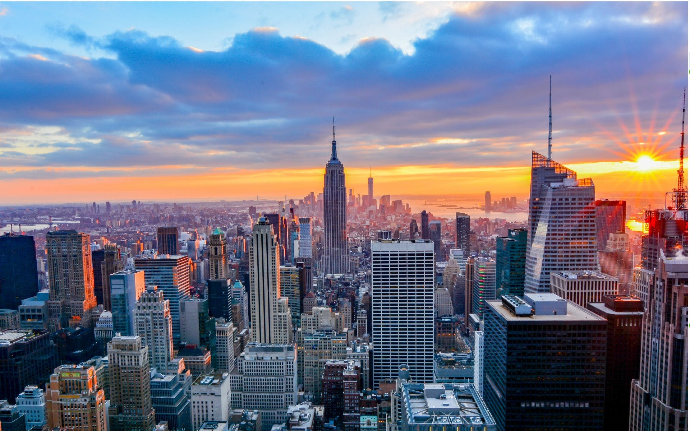

The city that never sleeps
New York is one of city the most visited and loved in all the world. If you like entertainment, this city is the right place for you. So let know something about this place. New York is formed for five boroughs: Manhattan, Staten Island, Queens, Brooklyn and Bronx. This city has the most adjectives, ones that's The city the never sleeps and The Big apple. Besides The big apple, have very amazing places you need to visit like: Empire State Building, Statue of Liberty, Central Park, Times Square, Brooklyn Bridge, Ground Zero etc.
HISTORY
Situated on one of the world's largest natural harbors, New York City is composed of five boroughs, each of which is a county of the State of New York. The five boroughs—Brooklyn, Queens, Manhattan, the Bronx, and Staten Island—were created when local governments were consolidated into a single city in 1898. The city and its metropolitan area constitute the premier gateway for legal immigration to the United States. As many as 800 languages are spoken in New York, making it the most linguistically diverse city in the world. New York is home to more than 3.2 million residents born outside the United States, the largest foreign-born population of any city in the world as of 2016. As of 2019, the New York metropolitan area is estimated to produce a gross metropolitan product (GMP) of $2.0 trillion. If the New York metropolitan area were a sovereign state, it would have the eighth-largest economy in the world. New York is home to the highest number of billionaires of any city in the world.
CURIOUS FACTS ABOUT NEW YORK
- The first people arrived in New York around 10,000 B.C.
- More than 1 billion people use the subway of New York very year,
- New York City is the most populous city in the United States and the New York metropolitan area is one of the most populous in the world.
- New York City became the first capital of the United States,
- The New York Public Library has over 50 million books and more of twenty thousand movies happened in
New York,
- More than 800 languages are spoken in New York City,
- The first pizzeria in the United States opened in NYC in 1895